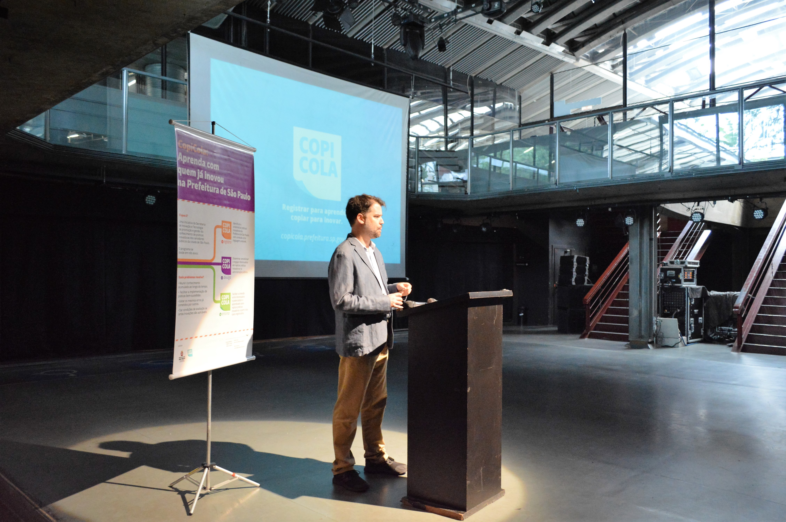

O CopiCola é uma iniciativa da Secretaria de Inovação e Tecnologia que promove a gestão do conhecimento de práticas inovadoras de mais de 114 mil servidores públicos da cidade de São Paulo.
E como isso é feito? Partindo da seleção dos casos, registramos todas as etapas que possibilitaram a implantação da inovação, produzindo, por fim, um guia para facilitar a replicação da prática em outros contextos.
O programa foi criado em maio de 2018 em resposta a uma necessidade de registrar os aprendizados e divulgar a experiência de uma boa prática da Prefeitura de São Paulo. O primeiro guia produzido serviu de piloto para validar a metodologia de coleta, análise e sistematização de dados criada pelas coordenadorias de Projetos de Inovação Pública e Plataforma de Inovação.
A partir dessa experiência, o CopiCola se tornou um programa da Secretaria Municipal de Inovação e Tecnologia que contribui para a disseminação da cultura da inovação na Prefeitura de São Paulo.
Mais do que sistematizar casos, são objetivos do programa a divulgação ampla e a construção de pontes entre os realizadores das práticas e os interessados em copiar a inovação. Todo conteúdo gerado é aberto para copiar, compartilhar e criar a partir dele para qualquer fim, desde que atribuído o crédito apropriado.
O programa atua em 3 eixos:
identificar e sistematizar práticas inovadoras da Prefeitura de São Paulo com conteúdo útil e linguagem acessível.
disseminar, sensibilizar e engajar interessados em replicar práticas inovadoras na administração pública.
facilitar a conexão entre interessados e potencializar o aprendizado para replicar práticas inovadoras a partir dos casos registrados
Os guias estão estruturados de modo a apoiar os interessados em replicar a iniciativa. Através deles você terá acesso a:
Conheça as iniciativas registradas pelo CopiCola e faça download dos guias para implementação clicando Abaixo
#InovaçãoAberta #CódigoAberto #SoftwareLivre #DadosAbertos #ContrataçãodeInovação #Mobilidade
#Autodeclaração #Integração #FluxosDeTrabalho #SimplificaçãoDeProcessos
#ChamamentoPúblico #Transparência #Integração #Credenciamento #PagamentoDigital #Transportes
#SoftwareLivre #Transparência #AcessoInformação #Colaboração #InovaçãoAberta #Chatbot #Educação
#Digitalização #Compartilhamento #SoftwareLivre #GestãodaInformação #FluxosdeTrabalho #SimplificaçãodeProcessos
Você participa ou conhece uma iniciativa inovadora dentro da Prefeitura de São Paulo que merece ser registrada e servir de inspiração para outros gestores públicos? Inscreva essa iniciativa aqui.
Increva-seAs iniciativas serão analisadas de acordo com critérios eliminatórios e de desempate. Confira os critérios do programa CopiCola clicando aqui.
Critérios de SeleçãoBuscamos organizações da sociedade civil para realizar pesquisa e sistematização de mais 8 iniciativas inovadoras da Prefeitura de São Paulo.
Será celebrada parceria, em conformidade com a Lei nº 13.019/2014 e com o Decreto Municipal nº 57.575/2016, através de termo de colaboração, mediante as condições estabelecidas no Edital de Chamamento Público nº 003/2019 e seus anexos
Convidamos representantes dos 5 casos registrados para um bate-papo sobre as iniciativas que fizeram parte, destacando quais problemas buscavam resolver, por que foram inovadoras e qual a importância de ter o processo de implementação registrado.
#PraCegoVer: Vídeo de apresentação dos cinco primeiros casos do Programa CopiCola. O Vídeo se inicia com CopiCola: Registrar, Divulgar, Ensinar. Em seguida surge a Pergunta De qual caso você fez parte? escrita em roxo com fundo cinza. Os participantes de cada caso falam sobre que caso fazem parte: Concurso de Projetos, Empreenda Fácil, Zona Azul, Prato aberto, Banco de dados geográficos. Surge a seguir a pergunta: Que problema Resolve em roxo com fundo cinza. Novamente os membros respondem. Surge novamente mais uma pergunta Por que é inovador?. Os membros respondem. Por fim, surge a última pergunta: Qual a importância de ter esse caso registrado? . Os membros respondem. Ao fim surge, novamente em fundo cinza com letras roxas, CopiCola. Registrar para aprender, Copiar para inovar.
O programa CopiCola foi lançado no dia 20 de março no Centro Cultural São Paulo (Rua Vergueiro, 1000). Confira as fotos:
